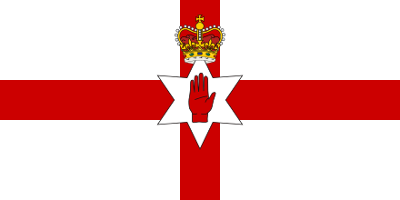
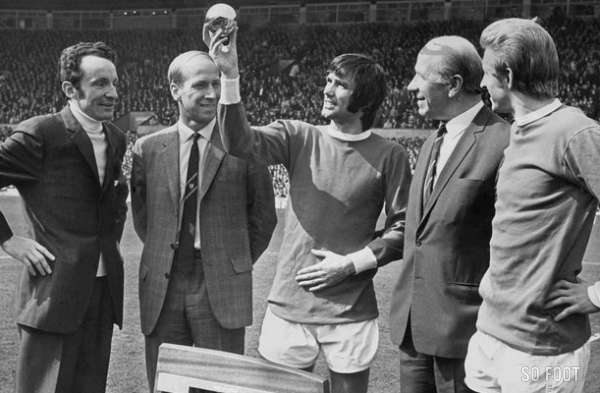
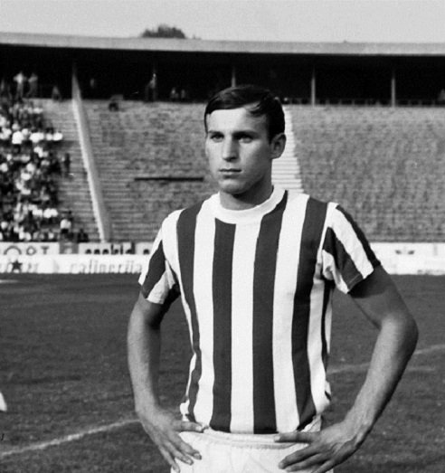

 George BEST - 1968

- Un Beatles qui change sans cesse de rythme
Le milieu de terrain tchécoslovaque puis tchèque
Josef Masopust
, remporte en 1962, à 31 ans le Ballon d’Or.
Nationalité : Irlandaise
Né le :: 22 mai 1946, à Belfast (IDN)
Décédé le 25 novembre 2005, à Londres(ANG)
Taille : 1,70
Poids : 68 kg
Poste : attaquant
Clubs : Manchester United (1961-1974), Dunbstable Town (1974), Stockport County (1975), Cork Celtic (1975-1976), Fulham (1976-1978), Los Angeles Aztecs (1976-1978), Fort Lauderdale Strikers (1978-1979), Hibernian Edimbourg (1980-1981), San Jose Earthquakes (1981-1982), Motherwell (1982-1983), Arbroath Victoria (1983), Glentoran (1983), Bournemouth (1983), Nuneaton Borough (1984) et Tobermore (1984).
Palmarès de joueur : Coupe des champions 1968 ; Championnat d'Angleterre 1965 et 1967
Bilan en club : 718 matchs, 255 buts
Bilan en équipe nationale : : 37 sélections A, 9 buts (1964-1977)
Palmarès Ballon d'Or : vainqueur en 1968 et (3e en 1971)
Classement du Ballon d’Or France Football 1968 :
George Best (Irlande du Nord / Manchester United),
61 pts.
Bobby Charlton (Angleterre / Manchester United),
53 pts.

Dragan Dzajic (Yougoslavie, Etoile Rouge Belgrade),
46 pts.
Retour à l'accueil